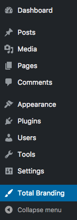
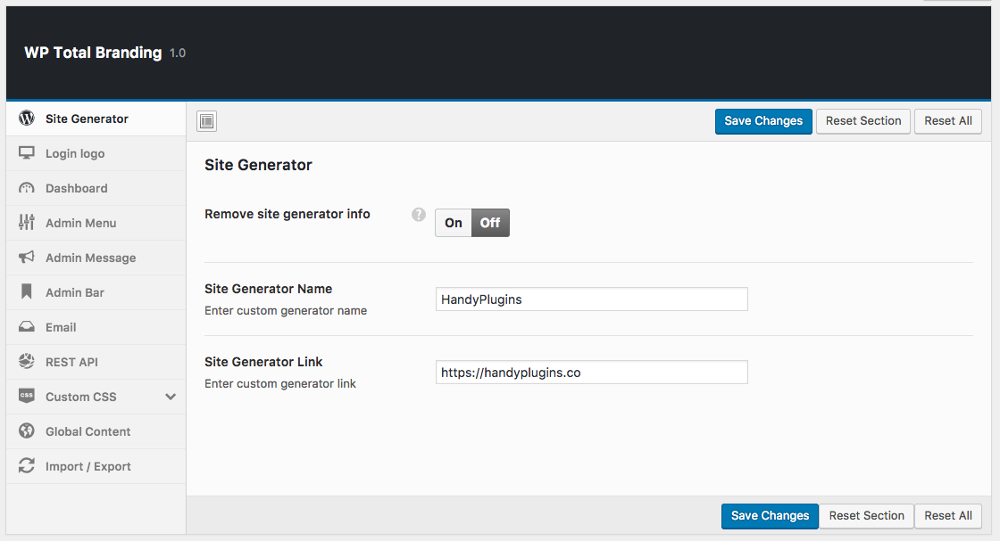

WP Total Branding
Simple and powerful branding solution for WordPress
Thank you for downloading and using this plugin! This WordPress plugin provides simple and efficient branding solutions to your website, hope you find it useful on your site!
If you have any questions that are beyond the scope of this help file, please feel free to email us.
There are two methods for installation:
1) From within WordPress
- Visit 'Plugins > Add New'
- Click 'Upload Plugin' button and upload downloaded plugin file
- Activate WP Total Branding from your Plugins page.
- That’s all.
You can find detailed info on WordPress codex.
2) Manually
- Upload the
wp-total-branding folder to the /wp-content/plugins/ directory
- Activate WP Total Branding from your Plugins page.
- That’s all.

You will see 'Total Branding' menu when activate the plugin.
Note: You have to activate network wide on multisite setup.
-
Site Generator: remove or change WordPress generator tags. doc
-
Login Logo: change WordPress default login logo. doc
-
Dashboard: hide welcome screen, remove WordPress dashboard widgets customize admin footer. doc
-
Admin Menu: remove admin menu items. doc
-
Admin Message: make an announcement. doc
-
Admin Bar: remove WordPress admin bar logo or replace with your custom logo. doc
-
Email: change default email sender info. doc
-
REST API: disable or change base prefix of the REST API. (WordPress 4.7+) doc
-
Custom CSS: add additional CSS to login page, admin dashboard and website. doc
-
Global Content: add header or footer contents globally. doc

This section is to help you identify common issues that may arise during installation and usage of this plugin.
-
I've changed REST API base prefix but not working?
– You have to flush rewrite rules. You can do this by visiting "Permalinks" menu under the Settings.
-
My logo doesn't fit the login screen.
– If your login logo’s width larger than 320px, it will be scaled automatically. So, if you want to see exactly same logo on the screen, please make sure it's smaller than 320px.
This section is to help you import or export plugin configuration.
Export
- Visit Import/Export module through the 'Total Branding' menu in WordPress
- Click "Download Data File".
Import
- Visit Import/Export module through the 'Total Branding' menu in WordPress
- Click "Import from File".
- Paste your exported settings.
- Save
Redux Framework: for beautiful admin interface.
redux-vendor-support: for supplying vendor libraries, in place of CDN
Once again, thank you so much for purchasing this plugin. We'd be glad to help you if you have any questions relating to this plugin. No guarantees, but we'll do our best to assist.